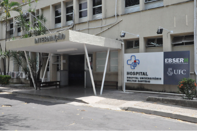
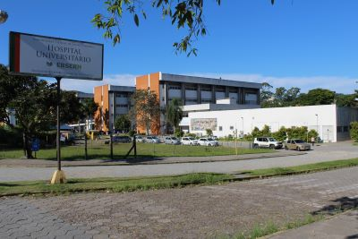

Oportunidades
Buscar
Home
Dicas
Oportunidades
Sobre nós
Fórum

Projetos de Extensão do Departamento de Fisioterapia (UFC) oferecem atendimento gratuito para pacientes com pé diabético
Rede de Teleassistência de Minas Gerais: Inovação em Telessaúde

HU-UFSC realiza mutirão de laqueaduras